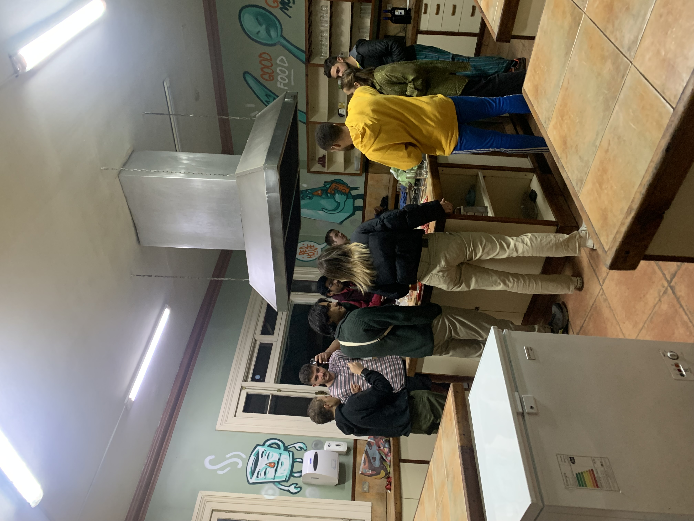
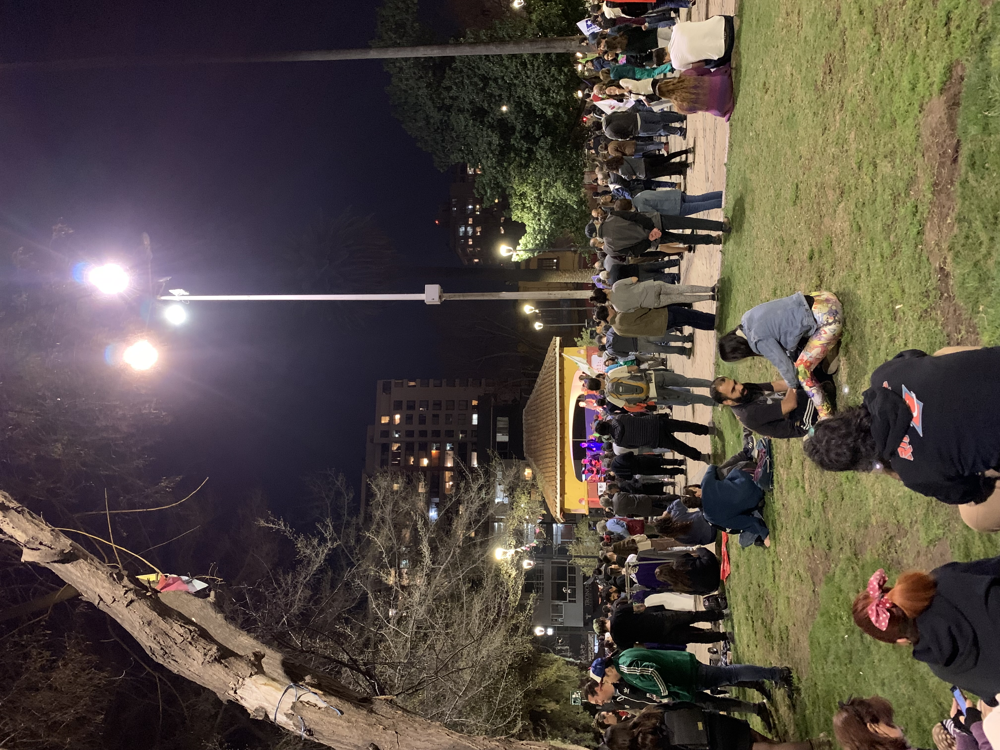
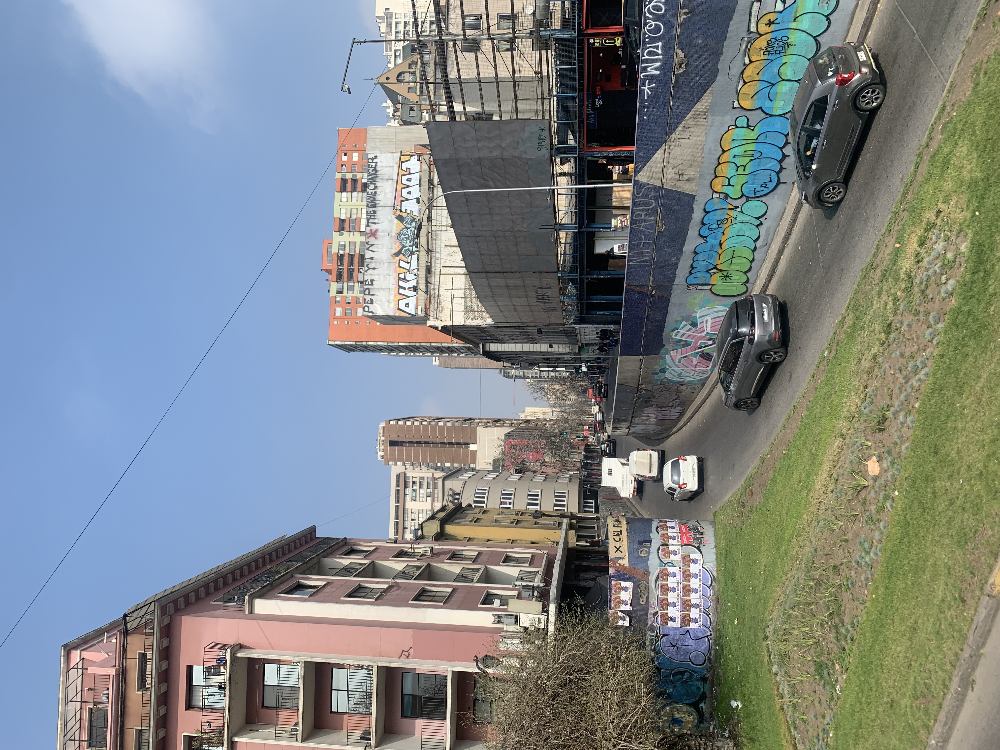
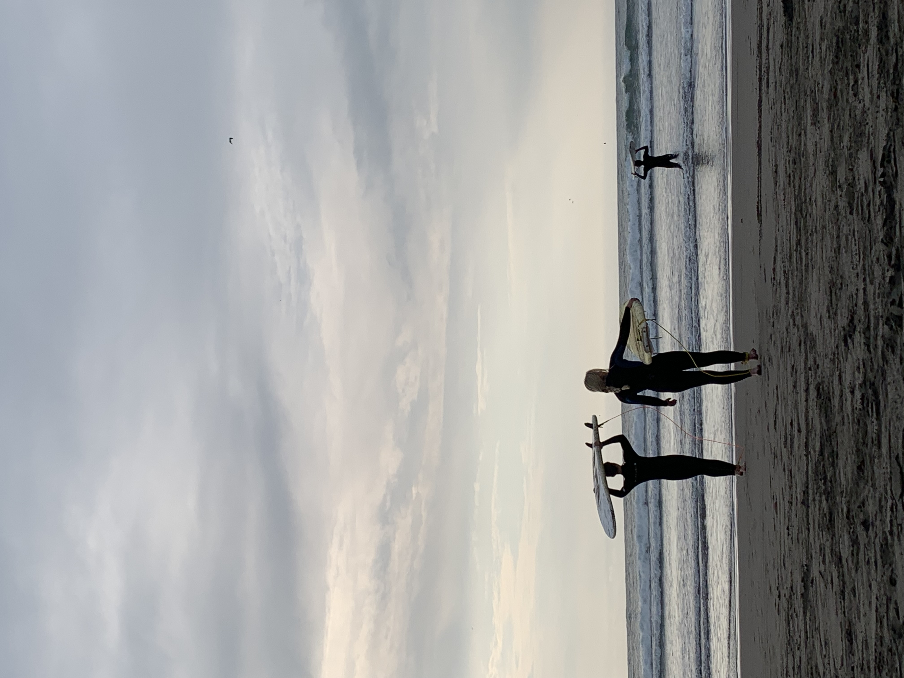
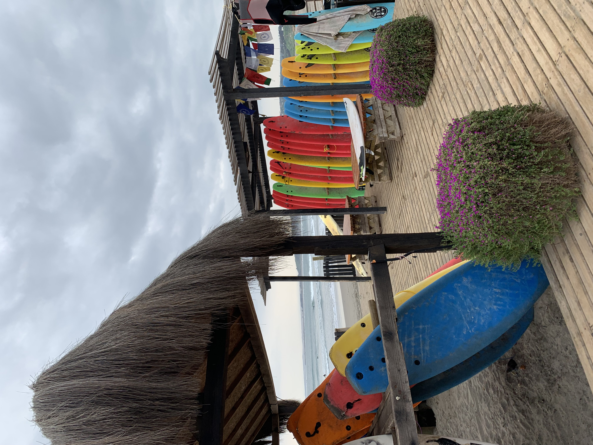
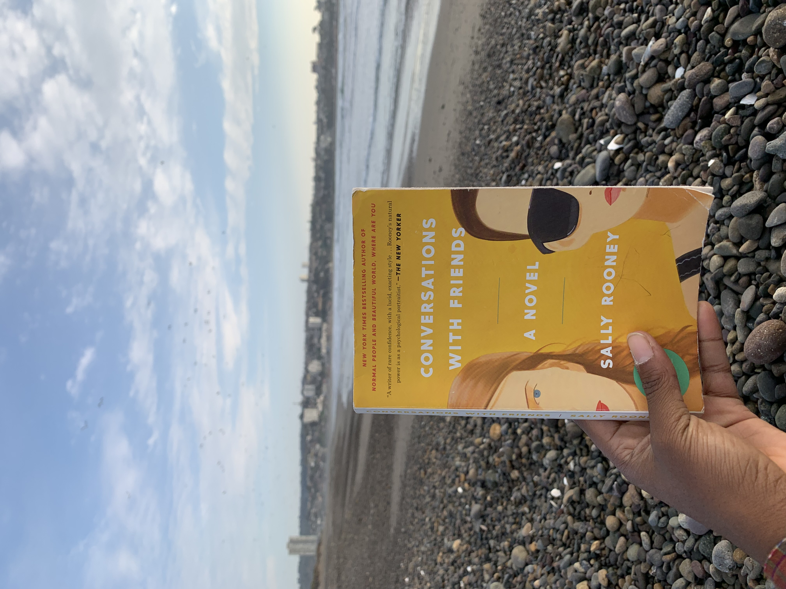

1 / 7

2 / 7

3 / 7

4 / 7

5 / 7

6 / 7

7 / 7

ABOUT THE TIME I SPENT IN SANTIAGO, CHILE
29th June 2024
I arrived in Santiago, Chile on the 12th of August 2022. I remember wandering around the airport trying to figure out where to catch the bus. I did not speak much Spanish, and I still don't, although I understand more now, so I could not really ask anyone. After about 15 minutes of wandering around, I eventually found myself at a bus terminal. Using Google Translate, I was able to communicate to the bus driver where I was headed. I did not have any Chilean pesos, but he let me get on anyway. He said he could take me to the center and from there I could take another bus to my hostel, so I got on. When we got to the center, he offered to drive me to my hostel after he parked the bus. I really did consider it for a minute but then decided against it when he told me he was only willing to give me a ride because he thought I was "cute", for some reason that made me uncomfortable. So when he went to park the bus, I left. Using Google Maps, I was able to figure out where I ought to go to catch my next bus. It was a cold night and I was wearing shorts. Contrary to my expectations it was not summer in Santiago, Chile. No, it was in fact the dead of winter and I had packed for summer. I did have a hoodie I got last minute from a thrift store in LA, I had a layover there. I made it to the bus stop, and 15 ish minutes later the bus arrived. It dropped me off a few yards from my hostel and 5 minutes later I was at the hostel. I liked the hostel from the first moment I stepped into the place. There was a very cozy feel to the place- from the lights to the furniture and even the people. I was shown my room, which was a dormitory with about three sets of bunk beds. After unpacking I crawled into bed, I was not very hungry.
Sure I was nervous, I had just arrived in a strange country where I knew no one and whose language I did not speak, but for the first time in a long time, I felt really light and in that moment that was more than enough. I was to start work the next day. In the morning I woke up and got breakfast. Breakfast consisted of bread, butter, and fruit. After that, I met with the owner of the hostel who told me more about the work I had signed up for. Eventually, I will meet the other Volunteers. In total, there were about nine of us, I think. Besides me, there were two other girls from the States, one did some digital work for the hostel, I did not really talk to her much so I wouldn't say I know her all that well, but she was friendly. The other was a recent college grad who was just visiting Chile in between her plans to move to New York City. She was just a very likable person, so of course I liked her. She gave me the impression of someone who at some point put in a lot of thought into every aspect of the person she wanted to be and then became that person and I respected her for that. There were two guys from the States, one from Texas and the other from New York. The guy from Texas was taking online classes at the time, so he spent a lot of time staring at his computer. He generally kept to himself and didn't go out or talk much, but I always appreciated the little things he did. I remember when we visited Valparaiso during our last couple of days in Chile. It was the end of the day and we were walking to the bus stop and at some point in the evening, I was feeling a little shitty. I put in my earbuds to calm myself down and started engaging less, but that didn't stop him from engaging with me which in itself somehow helped, I don’t know if that was his intent, but I was grateful. He is just a kind and thoughtful person, he feels like the kind of person I could properly love. The guy from New York had a girlfriend back in the States whom I remember him telling me he knew he was going to marry someday. When he told me that all I kept wondering was what it felt like to be that sure about someone. Anyway, I admired a lot about this guy, how earnest he seemed, and how open to life and experiences he was. He gave me the impression of someone who would go the extra mile for those he cared about. He just seemed to see and value each person he met for who they are. I appreciated how present he seemed when he engaged with anyone including me. It just always felt like he was all there, all in, always and what's not to love about that? Besides the Americans, there were two English guys. One had been traveling in South America for a while. He was sort of quiet generally, but you could tell he really cared. He was the kind of person you want to talk to when you are having a rough time. The other, like the rest of us, had just arrived in South America. He seemed to be out there to have a good time and a good time he had. There were two girls from Denmark. They had been there a while before the rest of us arrived. I did not get to know either of them well enough to be able to describe either of them in any sensible way, but I heard they know how to party.
I don’t really remember my first interaction with most of the Volunteers but I do remember my first interaction with the guy from New York with the girlfriend. He had just arrived in Chile and I and one of the receptionists who manage the front desk decided we were going to go out dancing. He told me he knew a gay club we could go to and I figured why not. We got ready and as we were heading out, he arrived. I don't know how, but the three of us ended up heading out together. The club was rather small, but the music was really good, primarily reggaeton. The three of us danced for a couple of hours, took smoke breaks, and danced some more. At some point, the receptionist went off somewhere and it was just me and him. I remember the feeling of his eyes on me, you know how you can just feel when someone is staring at you without even having to look their way? It was like that. At some point, this random woman started dancing with us and she kept trying to make eye contact. Without thinking much of it, I returned the eye contact and smiled. At some point, the guy from New York came closer, standing in between me and the woman, whispering in my ear, he told me usually when someone makes eye contact like that on a dance floor is because they want to f*ck. Now that was news to me. We decided to take a break, we sat in some corner and for the first time properly introduced ourselves to each other. I don’t remember the rest of the night but I do remember the feeling of ease I felt sitting next to him. Over the next couple of weeks, he and I would spend a lot of time together.
At the hostel, our Mondays to Wednesdays consisted of about 6-7 hours of work, dinner, and bed. Often, I went on little excursions with the guy from New York. We would sometimes go grocery shopping or go walking around the city taking photos, and some evenings we would make dinner together. There is this memory I keep revisiting where he and I were making pasta and sauce for dinner. I was sitting on the counter and he was by the stove stirring the sauce, we were talking and whatnot, but at some point, I think he asked me if I wanted to taste the sauce and I said yes, scooping some of the sauce with the stirring spoon he was using he came over to the counter and fed it to me. Anyway, it's one of my favorite memories of him and I. There was just a delicateness to the action and comfortableness with each other, a comfort that was present throughout the whole evening and that before then, I had not really experienced with anyone else. And before you judge me, I will mention, he and his girlfriend were in an open relationship at the time. Anyway, on Wednesdays and sometimes Fridays he, I, and the other volunteers in the hostel went partying. We would get drunk and dance until the lights in the club came on, which usually happened around 4 am. Sundays were a lazy day. I remember spending some Sundays walking around Santiago with some of the other volunteers. I have this memory of us eating tacos and burritos at a cute little restaurant. On Monday the cycle starts all over. Eventually, the week boiled down to three days of manual labor, two days of partying, and a couple of days of rest in between. It was a simple life. I enjoyed the work, I adored the people, and liked the place, for the most part. I say for the most part because in Chile was the first time I got pickpocketed. After it happened, I wrote the following reflection.
The world currently feels like too much for me to deal with. Yesterday I was out shopping at a mall in Chile. I was in a forever21 and these two women reached into my pocket and stole my phone. I of course did not notice until after the fact, but once I did I let the store know and they sent me to the Apple store downstairs to use the 'find my' app to locate the phone, but I couldn't remember my iCloud password. I rushed home and used my table to try locating it, but the phone was turned off so I couldn't find the location. Anyway, I ended up not finding the phone and now I have to get a new one. At the moment my heart just feels so fucking heavy, I am sad about all the memories that were on that phone that are now lost and a little annoyed by the fact that all this could have been avoided if just a few things were changed like if I had gone to the old navy instead of the forever21, or waited until the ladies move to go look at the sweat pants, or had my phone in my bag instead of my pocket or maybe just not have gone out at all. That's what is most annoying about it all, it didn't have to happen, but it did. Not to be dramatic but the world has felt colder since the phone incident. Yesterday when I laid in bed trying to come to terms with what had happened, I felt very alone and I thought how good it would feel to have someone in the room who genuinely cared about me and I about them. For the first time being alone or around strangers did not feel enough and honestly, I don't think it has ever been enough, I have just been hesitant to admit it because admitting it would mean acknowledging that I want something I don't have and may never have. Turns out it is true that people do help make living less terrifying, they make the harshness that comes with living feel less harsh. I just wish I was brave enough to love back those who loved me because traveling and partying with strangers is not making me feel less empty. I would like to say for the longest time this is what I have wanted to do- traveling- and to some degree it still is, but it is not feeling like I thought it would. I thought I would feel lighter, feel detached, and feel good about it, but I just feel emptier and heavier. Yet I somehow feel more connected to people than I have ever felt. I met some people at the hostel who I don't want to say goodbye to, people I want to get to know and be around. I also feel more appreciative of the people who I already have in my life and I am grateful for that because for the longest time, I felt nothing towards anyone and it felt like there was nothing I could do to change that. Or maybe there were feelings, but I just didn't know how to feel. Regarding feelings, I find myself occasionally wondering if others are as overwhelmed by emotions as I turn to be. Heartbreak, pain, and disappointment all feel disorientatingly overwhelming, but why do happier emotions like happiness and peace not feel the same? Why can't I be so happy that I feel disorientated? To be fair I think I do. I don't want to be overwhelmed all the time, I want to feel things without feeling like they would end me. I don't want to shut out everything because it all feels too much. I hope I figure it out soon. Anyway, my phone being stolen really has me in my feelings and I am trying to make something of it by reflecting on the experience because it would suck if this was all for nothing. If there were no lessons learned or no new realizations arrived at. I don't know maybe at the end of the day there really isn't anything to be learned and this just sucks.
A little dramatic if you ask me now, but it was honest which is why I decided to include it in this post. My account of my time in Santiago would be incomplete if I did not mention the political unrest that was evident in Santiago at the time. I had arrived in Chile just months after President Gabriel Boric, who is the youngest president in Chilean history, by the way, had just proposed a new constitution. I will not pretend I understand it, but from the little I gathered, it was very liberal in nature, maybe too liberal for the people of Chile. The constitution advocated for rights for indigenous communities and rights for nature and animals, it prohibited the death penalty, slavery, and torture among other things, it advocated for a more robust democratic system. I know when I heard that in the September of 2022, it was rejected by 62% of the Chilean population, I was confused too. I mean all the things advocated for in the Constitution sound like the ideal for any society, like what everyone should want. But it did not seem like what the people of Chile wanted. There were a lot of protests in the streets. I and the guy from New York went to a couple of protests, they were mainly loud. People were sprayed with water, tear-gassed and some were detained. In my opinion, I feel like the constitution was received as it was because it said little about the everyday struggles the people of Chile faced, struggles such as lack of economic opportunities, social inequality, and practical things of that nature which were all things that led to the need for a new constitution in the first place, so of course it was rejected by the people.
Anyway, after about three weeks in Santiago, we all got tired of partying and the idea of going out became less appealing. We still went out, but it was not as enjoyable as it had been in the beginning. It was around then that people started leaving. We had a dinner party to celebrate our time together. We drank wine, ate pasta and took a lot of photos. It was a lovely evening. Oh and regarding the guy from New York, things did get a little complicated between him and I. He wanted me and I wanted him. I could tell he wanted me to make a move, but for some reason, I wouldn't despite very obviously wanting to. When he did make a move, for whatever reason I would not reciprocate. I could feel him getting frustrated. Anyway, it was around then that the girl from Canada arrived. He started hanging out with her more and more and with me less and less. Whenever he would hang out with her or spend the night with her, he would tell me all about it the next day. And although I liked that he felt comfortable enough to share things like that with me, it still really hurt to hear, it took a lot of effort to play it cool. I did eventually meet someone else as well, he was from Brazil and was in Chile learning Spanish. He was sweet, I enjoyed his company. We would go for walks together, we went to this live music thing in the park this one time and that was cute. I don’t think he was attracted to me though, I don't even think he wanted to be my friend. I will elaborate more on why I feel that way when I write about my time in Brazil and meeting up with him there. But yes, at the time it was fun. The guy from New York and I were still friendly with each other, but things just weren’t the same. I think the last time he and I properly hung out was a few days before I left for Argentina. We were in his bed watching the movie Malcolm and Marie and well the tension between us was there for sure. We kept looking at each other like we wanted something to happen but knew it couldn’t because, at that point, he and his girlfriend were no longer in an open relationship. In the room upstairs somebody was having sex with somebody and the bed was creaky as hell, that did not help matters. He is a better person than I am because he told me he was going to go to bed and I should go, so I did and that was that. We did not really hang out just him and I again after that night.
Eventually, everyone moved on. The girls from Denmark went back to Denmark, I think. The girl from New York went down to Patagonia with her sister. The girl from Canada went back to Canada. The English guy who had been in South America for a while went back to Argentina and the other went somewhere else in South America, I don't remember where. The other American guy from Texas, I think, went back to Texas. The guy from New York eventually headed back to New York and I left for Argentina. We were replaced by a new cohort of volunteers and the only evidence that we were ever there was the work we did and the impact we had on one another. Looking back on the time I spent in Chile I think about all that I learnt. I learned that it hurts more to leave without saying goodbye than it does to say goodbye. I realized that all the things I feared happening in the end only happened because I was so scared of them happening that I did not let myself take a chance. I am grateful for the people I met there, the conversations I had, and the experiences we shared. I regret every time I hesitated.